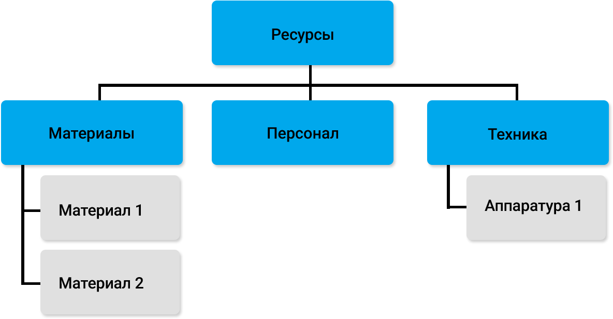

На следующем этапе следует оценить ресурсы операций. Чаще всего используют 3M-модель (machins, materials, manpower), для того чтобы ответить на вопрос — кто и какими средствами будет выполнять ту или иную операцию

Не всегда на этом этапе есть возможность определить конкретных специалистов, которые будут выполнять задачи, но общие требования к ним сформулировать вполне возможно.